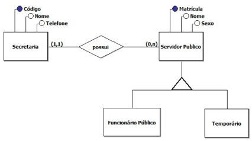

TI verde Computação em nuvem 
Banco de Dados Formulário
exemplos: endereço, data, nome etc.
exemplos: endereço de entrega, idade...
Antes de entender o que é um banco de dados, é importante saber a diferença entre as palavras “dados” e “informações”. Os dados são os fatos brutos, em sua forma primária, e podem não fazer nenhum sentido quando estão isolados; já as informações são o agrupamento de dados organizados, de forma que façam sentido e gerem algum conhecimento.
Segundo Korth, um banco de dados “é uma coleção de dados inter-relacionados, representando informações sobre um domínio específico”, ou seja, sempre que for possível agrupar informações que se relacionam e tratam de um mesmo assunto, posso dizer que tenho um banco de dados.”
Podemos exemplificar situações clássicas como uma lista telefônica, um catálogo de CDs ou um sistema de controle de RH de uma empresa.
Já um sistema de gerenciamento de banco de dados (SGBD) é um software que possui recursos capazes de manipular as informações do banco de dados e interagir com o usuário. Exemplos de SGBDs são: Oracle, SQL Server, DB2, Postgre, MySQL, o próprio Access ou Paradox, entre outros.
A informação é muitas vezes a coisa mais valiosa das empresas, mantê-las e poder acessá-las sempre que necessário é primordial para tomar decisões importantes. Mas controlar o acesso a essas informações também é importantíssimo. Já pensou se elas caíssem em mãos erradas? E a perda de informações? Já imaginou se estragasse o HD do servidor onde está o banco de dados? Backup é uma forma de garantir que informações não serão perdidas.
Analisando os 5 primeiros SGBDs, temos Oracle em 1º lugar com um pequeno aumento no mês de março comparado com o mês de abril de 2020. O MySQL se mantém no 2º lugar e pode aparecer em 2020 como um concorrente forte para o primeiro lugar. Em 3º lugar está a Microsoft SQL Server, que vem caindo de pontuação em relação a março/2019. O PostgreSQL aparece em 4º lugar, já o MongoDB um banco de dados não SQL (NoSQL) permanece em 5º lugar.
O sistema de banco de dados deve garantir uma visão totalmente abstrata do banco de dados para o usuário, ou seja, para o usuário do banco de dados pouco importa qual unidade de armazenamento está sendo usada para guardar seus dados, contanto que os mesmos estejam disponíveis no momento necessário.
Esta abstração se dá em três níveis:
Um modelo de dados são as ferramentas que o profissional escolhe para a organização das informações e descrição de dados, relacionamentos...
Um projeto contém duas fases: Modelo Conceitual e Projeto Lógico.
Essas etapas preparam o banco de dados antes dele existir, evitando erros e facilitando possíveis manutenções futuras.
O modelo conceitual é a descrição do BD de maneira independente ao SGBD, ou seja, define quais os dados que aparecerão no BD, mas sem se importar com a implementação que se dará ao BD. Desta forma, há uma abstração em nível de SGBD. Uma das técnicas mais utilizadas dentre os profissionais da área é a abordagem entidade-relacionamento (ER), onde o modelo é representado graficamente através do diagrama entidade-relacionamento (DER).
O modelo lógico descreve o BD no nível do SGBD, ou seja, depende do tipo particular de SGBD que será usado. Não podemos confundir com o Software que será usado. O tipo de SGBD que o modelo lógico trata é se ele é relacional, orientado a objetos, hierárquico etc. O SGBD relacional é o mais conhecido. Nele, os dados são organizados em tabelas.
Os modelos de dados são ferramentas que permitem demonstrar como serão construídas as estruturas de dados que darão suporte aos processos de negócios, como os dados estarão organizados e quais os relacionamentos que pretendemos estabelecer entre eles.
Os principais objetivos da modelagem de dados são: representar o ambiente observado, documentar e normalizar, fornecer processos de validação e observar processos de relacionamentos entre objetos.
Embora Modelo Lógicos e Modelos Físico parecerem similares, e eles de fato são, o nível de detalhes que eles modelam pode ser significativamente diferente. Isso porque o objetivo de cada diagrama é diferente – podemos usar um Modelo Lógicos para explorar conceitos do domínio com os envolvidos no projeto e Modelos Físico para definir o projeto do banco de dados.
Os transacionais são aqueles projetados para atender à sistemas transacionais, ou seja, que tenham foco nos dados provenientes de interações de um sistema informatizado com suas fontes de dados. Ela prima armazenar e recuperar os dados referentes às transações. A preocupação nesse caso é com a normalização dos atributos, útil ao processamento de informações imediatas e não ao gerenciamento e tomada de decisões.
Por outro lado, a modelagem informacional – ou dimensional – tem objetivo oposto, ela visa atender a necessidade da tomada de decisão e para isso se baseia em grandes volumes de dados da base transacional. Nesse caso, o histórico é essencial e necessita de muita armazenagem.
Na modelagem de dados também é importante saber sobre a estrutura fundamental dos sistemas, que normalmente são Cliente-Servidor, e consiste em estações de trabalho conectadas via rede aos servidores. Essas estações oferecem interfaces apropriadas para uso dos servidores, bem como processamento para aplicações.
Já no sistema cliente-servidor de três camadas, a indicação é para web, já que possui uma cada intermediária entre o cliente e o servidor de banco de dados. Essa camada é o servidor de aplicações ou servidor web e pode armazenar regras de negócio para acessar os dados do servidor.
Certos conceitos são utilizados na modelagem conceitual para descrever os papéis de cada componente do domínio analisado. Dentre eles, podemos citar:
São comumente efetivados com estas 3 cardinalidades:
Podem ser regidos sob 2 condicionalidades (exemplificadas abaixo):
Duas categorias são usadas para defini-las:
O projeto de banco de dados é fundamental para o sucesso na implementação da tecnologia de banco de dados em uma empresa. Para pequenos sistemas muitas vezes o responsável pelo projeto parte diretamente para a criação do banco de dados físico e em seguida a criação das tabelas, colunas e índices. Porém quando se pensa em um banco de dados para uma empresa grande, dependendo do tamanho do projeto é fundamental um bom processo de projeto de banco de dados para que se possa garantir que o usuário terá todos os seus requisitos de informação atendidos na forma de informações disponíveis no banco de dados, além de outras considerações já vistas anteriormente tais como disponibilidade, desempenho e confiabilidade do banco de dados.
Um projeto de banco de dados é caracterizado por um processo que possui fases distintas e com aspectos diferentes, mas que tem como objetivo final a implementação de um banco de dados que atenda às necessidades de informação do usuário e aos requisitos não funcionais de disponibilidade, desempenho e confiabilidade esperados.
As Três fases que fazem parte de um projeto de banco de dados:
Visão Geral do negócio;
Facilidade de entendimento entre usuários e desenvolvedores;
Possui somente as entidades, relacionamentos e atributos principais.
Os principais produtos da fase de projeto conceitual são:
O principal produto da fase de projeto lógico é o modelo relacional.
No modelo físico, a linguagem SQL (Structured Query Language), é a linguagem padrão para definição, manipulação e controle de uso das estruturas de dados.
Existem muitos Sistemas Gerenciadores de Banco de Dados disponíveis no mercado. Como exemplo, podemos citar o PostgreSQL e o MySQL, que tem código aberto e são gratuitos. Também existe o Oracle, DB2, Sybase SQL Server, Informix e Microsoft SQL Server, que são pagos e não possuem código aberto, sendo bastante usados em corporações
DER, é a abreviação de Diagrama de Entidade Relacionamento. Esse diagrama nada mais é do que uma representação gráfica do MER (Modelo de entidade Relacionamentos). Em termos conceituais, podemos dizer que “Diagrama de Entidade Relacionamento“ é um modelo diagramático que descreve um modelo de dados.
Na elaboração de um projeto de banco de dados, diagramas ER são usados para modelar e criar bancos de dados relacionais, na parte das regras lógicas desse negócio, em um modelo lógico de dados e no termo de tecnologia específica a ser colocada ( no modelo físico de dados).
Em um modelo DER possuímos as entidades sendo substantivos concretos ou abstratos onde é possível guardar dados. Existem as entidades fortes, entidades fracas e entidades associativas.
Um modelo DER possui também os relacionamentos que são uma ação entre as entidades, representados por um losango. Cada relacionamento possui uma cardinalidade que representa o número de interações entre as entidades. As cardinalidades podem ser de: 1-1(um para um), N-1(um para muitos) ou N-N(muitos para muitos).
Cada entidade possui uma característica chamada de atributo. Eles podem ser descritivos, nominativos ou referenciais. Além disso existem os atributos Simples e Compostos. Quando um atributo representa um valor único da entidade é chamado de Atributo Identificador.
Exemplo de DER:
Um modelo relacional é um modelo de dados representativo (ou de implementação), adequado a ser o modelo subjacente de um SGBD, um banco de dados construído puramente baseado no modelo relacional estará inteiramente normalizado. A ideia de modelo relacional se baseia no princípio de que as informações em uma base de dados podem ser consideradas como relações matemáticas e que podem ser representadas, de maneira uniforme, através do uso de tabelas onde as linhas representam as ocorrências de uma entidade e as colunas representam os atributos de uma entidade do modelo conceitual.
Exemplo de modelo lógico relacional:
Antigamente muitas empresas armazenavam seus dados em arquivos físicos, porém com o tempo a necessidade de haver alguma ferramenta para facilitar esse processo foi aumentando.
Por volta do final dos anos 1970 surgiu um sistema baseado nas ideias de Edgar Frank Codd, um pesquisador da IBM que no começo da década havia realizado um artigo intitulado “A Relational Model of Data for Large Shared Data Banks”. Com esse sistema chamado de “Sistema R” também foi criado a linguagem de consulta estruturada (SQL - Structured Query Language).
Com o passar do tempo muitos sistemas de banco de dados foram baseados no Sistema R. Hoje possuímos dois tipos de SGBDS (Sistema gerenciador de banco de dados), sendo eles:
Dentre os Principais SGBDS utilizados pelo mundo estão: OracleDB, MySQL, SQLServer, PostgreSQL e DB2. Cada um se destacando por diversos motivos, seja pela facilidade, segurança, recursos avançados, etc.
Principais Constraints do SQL:
Restrição NOT NULL:
Restrição UNIQUE
Restrição PRIMARY KEY
Restrição FOREIGN KEY
Restrição CHECK
Restrição DEFAULT
O modelo físico é um modelo de baixo nível onde se leva em consideração as limitações do SGBD e é formado por comandos SGBD para criar tabelas usando como referência o modelo lógico.
Cada SGBD tem seus tipos de dados mas os principais são: numérico, data e tempo e string podendo ter a quantidade de caracteres fixa ou variável.
Exemplo de modelo físico e lógico Clique aqui